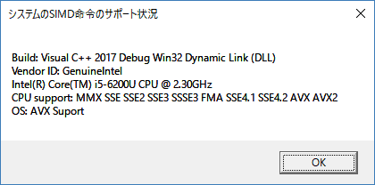
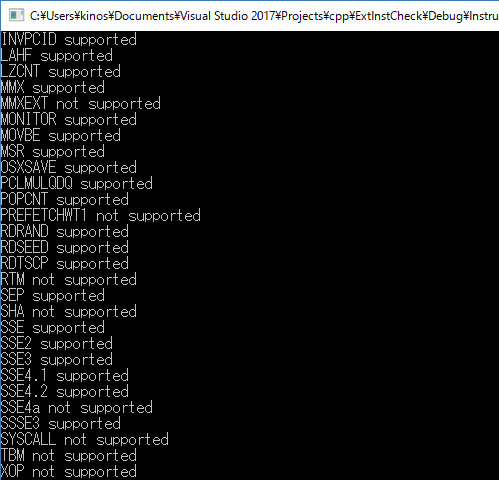

SIMD命令のサポート状況を確認する方法を以下に記載します。CPUID命令により行います。

[プログラムソース "ExtInstCheck.cpp"]
//
// _cpuid による SIMDサポート状況確認
//
#include <stdio.h>
#include <tchar.h>
#include <windows.h>
#include <intrin.h>
#if 1800 <= _MSC_VER // Visual C++ 2013以上
#include <VersionHelpers.h>
#else
#ifndef _WIN32_WINNT_WIN7
#define _WIN32_WINNT_WIN7 0x0601
#endif
inline bool IsWindowsVersionOrGreater(WORD wMajorVersion, WORD wMinorVersion, WORD wServicePackMajor){
OSVERSIONINFOEXW osvi = { sizeof(osvi), 0, 0, 0, 0, { 0 }, 0, 0 };
DWORDLONG const dwlConditionMask = VerSetConditionMask(
VerSetConditionMask(
VerSetConditionMask(
0, VER_MAJORVERSION, VER_GREATER_EQUAL),
VER_MINORVERSION, VER_GREATER_EQUAL),
VER_SERVICEPACKMAJOR, VER_GREATER_EQUAL);
osvi.dwMajorVersion = wMajorVersion;
osvi.dwMinorVersion = wMinorVersion;
osvi.wServicePackMajor = wServicePackMajor;
return VerifyVersionInfoW(&osvi, VER_MAJORVERSION | VER_MINORVERSION | VER_SERVICEPACKMAJOR, dwlConditionMask) != FALSE;
}
inline bool IsWindows7SP1OrGreater(void){
return IsWindowsVersionOrGreater(HIBYTE(_WIN32_WINNT_WIN7), LOBYTE(_WIN32_WINNT_WIN7), 1);
}
#endif
// CPUID 1 EDX
#define IA64_READY (1<<30)
#define HTT_READY (1<<8)
#define SSE2_READY (1<<26)
#define SSE_READY (1<<25)
#define MMX_READY (1<<23)
#define FPU_READY (1)
// CPUID 1 ECX
#define AVX_READY (1<<28)
#define AES_READY (1<<25)
#define SSE42_READY (1<<20)
#define SSE41_READY (1<<19)
#define FMA_READY (1<<12)
#define SSSE3_READY (1<<9)
#define SSE3_READY (1)
// CPUID 1 EBX
#define AVX512CD_READY (1<<28)
#define AVX512ER_READY (1<<27)
#define AVX512PF_READY (1<<26)
#define AVX512F_READY (1<<16)
#define AVX2_READY (1<<5)
// MSC バージョンチェック
inline int _MSC_CVER(void) {
int cver = 0;
#if _MSC_VER==1400
cver = 2005;
#endif
#if _MSC_VER==1500
cver = 2008;
#endif
#if _MSC_VER==1600
cver = 2010;
#endif
#if _MSC_VER==1700
cver = 2012;
#endif
#if _MSC_VER==1800
cver = 2013;
#endif
#if _MSC_VER==1900
cver = 2015;
#endif
#if _MSC_VER==1910
cver = 2017;
#endif
return cver;
}
int WINAPI WinMain(
_In_ HINSTANCE hInstance,
_In_opt_ HINSTANCE hPrevInstance,
_In_ LPSTR lpCmdLine,
_In_ int nShowCmd
)
{
UNREFERENCED_PARAMETER(hInstance);
UNREFERENCED_PARAMETER(hPrevInstance);
UNREFERENCED_PARAMETER(lpCmdLine);
UNREFERENCED_PARAMETER(nShowCmd);
TCHAR cpuname[4 * 4 * 4];
TCHAR inst[256];
TCHAR buf[256];
int cver = 0;
TCHAR *project;
TCHAR *win;
TCHAR *dll;
// Debug ? Release
#ifdef _DEBUG
project = _TEXT("Debug");
#else
project = _TEXT("Release");
#endif
// x64 ? Win32
#ifdef _WIN64
win = _TEXT("x64");
#else
win = _TEXT("Win32");
#endif
// Multi
#if defined _MT
#if defined _DLL
dll = _TEXT("Dynamic Link (DLL)");
#else
dll = _TEXT("Static MultiThread");
#endif
#endif
// MSC Version
cver = _MSC_CVER();
_stprintf_s(buf, sizeof(buf) / sizeof(TCHAR), _TEXT("Build: Visual C++ %i %s %s %s\r\n"), cver, project, win, dll);
// CPU information
{
inst[0] = 0;
cpuname[0] = 0;
int CPUInfo[4];
// CPU vendor ID
{
TCHAR vendorID[12 + 1];
int cpuInfo[4];
// "CPU vendor ID" の取得
__cpuid(cpuInfo, 0); // EAX=0: ベンダIDの取得
// EBX
char* p = (char*)&cpuInfo[1];
for (int j = 0; j < 4; ++j){
vendorID[0 + j] = *p++;
}
// EDX
p = (char*)&cpuInfo[3];
for (int j = 0; j < 4; ++j){
vendorID[4 + j] = *p++;
}
// EDC
p = (char*)&cpuInfo[2];
for (int j = 0; j < 4; ++j){
vendorID[8 + j] = *p++;
}
vendorID[12] = 0;
_tcscat_s(buf, sizeof(buf) / sizeof(TCHAR), _T("Vendor ID: "));
_tcscat_s(buf, sizeof(buf) / sizeof(TCHAR), vendorID);
_tcscat_s(buf, sizeof(buf) / sizeof(TCHAR), _TEXT("\r\n"));
}
// CPU processor information
{
__cpuid(CPUInfo, 0x80000000); // EAX=80000000h: サポートする最大拡張機能番号の取得
if (0x80000004 <= CPUInfo[0]){ // プロセッサブランド文字列の取得が可能である
int CPUInfoV[3][4];
__cpuid(CPUInfoV[0], 0x80000002); // EAX=80000002h,80000003h,80000004h: プロセッサブランド文字列
__cpuid(CPUInfoV[1], 0x80000003);
__cpuid(CPUInfoV[2], 0x80000004);
char* p = (char*)CPUInfoV;
for (int n = 0; n < 4 * 4 * 3; n++){
cpuname[n] = *p++;
}
_tcscat_s(buf, sizeof(buf) / sizeof(TCHAR), cpuname);
_tcscat_s(buf, sizeof(buf) / sizeof(TCHAR), _TEXT("\r\n"));
}
}
// CPU supports ...
{
// CPUID 1 EDX
__cpuid(CPUInfo, 1); // EAX=1: プロセッサ情報とプロセッサの機能
if (CPUInfo[3] & MMX_READY){
_tcscat_s(inst, sizeof(inst) / sizeof(TCHAR), _TEXT("MMX "));
}
if (CPUInfo[3] & SSE_READY){
_tcscat_s(inst, sizeof(inst) / sizeof(TCHAR), _TEXT("SSE "));
}
if (CPUInfo[3] & SSE2_READY){
_tcscat_s(inst, sizeof(inst) / sizeof(TCHAR), _TEXT("SSE2 "));
}
// CPUID 1 ECX
if (CPUInfo[2] & SSE3_READY){
_tcscat_s(inst, sizeof(inst) / sizeof(TCHAR), _TEXT("SSE3 "));
}
if (CPUInfo[2] & SSSE3_READY){
_tcscat_s(inst, sizeof(inst) / sizeof(TCHAR), _TEXT("SSSE3 "));
}
if (CPUInfo[2] & SSE41_READY){
_tcscat_s(inst, sizeof(inst) / sizeof(TCHAR), _TEXT("SSE4.1 "));
}
if (CPUInfo[2] & SSE42_READY){
_tcscat_s(inst, sizeof(inst) / sizeof(TCHAR), _TEXT("SSE4.2 "));
}
if (CPUInfo[2] & AES_READY) {
_tcscat_s(inst, sizeof(inst) / sizeof(TCHAR), _TEXT("AES "));
}
if (CPUInfo[2] & AVX_READY){
_tcscat_s(inst, sizeof(inst) / sizeof(TCHAR), _TEXT("AVX "));
}
// CPUID 7 EBX
__cpuid(CPUInfo, 7);
if (CPUInfo[1] & AVX2_READY){
_tcscat_s(inst, sizeof(inst) / sizeof(TCHAR), _TEXT("AVX2 "));
}
if (CPUInfo[1] & AVX512F_READY) {
_tcscat_s(inst, sizeof(inst) / sizeof(TCHAR), _TEXT("AVX512F "));
}
if (CPUInfo[1] & AVX512PF_READY) {
_tcscat_s(inst, sizeof(inst) / sizeof(TCHAR), _TEXT("AVX512PF "));
}
if (CPUInfo[1] & AVX512ER_READY) {
_tcscat_s(inst, sizeof(inst) / sizeof(TCHAR), _TEXT("AVX512ER "));
}
if (CPUInfo[1] & AVX512CD_READY) {
_tcscat_s(inst, sizeof(inst) / sizeof(TCHAR), _TEXT("AVX512CD "));
}
if (inst[0]){
_tcscat_s(buf, sizeof(buf) / sizeof(TCHAR), _TEXT("CPU support: "));
_tcscat_s(buf, sizeof(buf) / sizeof(TCHAR), inst);
_tcscat_s(buf, sizeof(buf) / sizeof(TCHAR), _TEXT("\r\n"));
}
}
}
// OS supports AVX ?
if (IsWindows7SP1OrGreater()){
_tcscat_s(buf, sizeof(buf) / sizeof(TCHAR), _TEXT("OS: AVX Suport"));
}
else{
_tcscat_s(buf, sizeof(buf) / sizeof(TCHAR), _TEXT("OS: AVX Not Suport"));
}
// 結果表示
MessageBox(0, buf, _TEXT("システムのSIMD命令のサポート状況"), MB_OK);
return (int)0;
}
Microsoft のホームページ上に紹介されていたコードを紹介します。
他のアプリで使いやすいように、*.cpp と *.h
へのファイル分割だけ独自に実施しています。
SIMD を使用する場合に便利そうなモジュールです。
■評価環境
開発環境： Visual Studio 2017 Pro.
OS： Windows10 home 1607
■実行結果

■ソースコード
[ InstructionSet.h ]
//
// _cpuid による SIMDサポート状況確認
//
// Refferences:
// https://msdn.microsoft.com/ja-jp/library/hskdteyh.aspx
//
#pragma once
#include <array>
#include <bitset>
#include <vector>
namespace hide {
class InstructionSet
{
// forward declarations
//class InstructionSet_Internal;
public:
// getters
static std::string Vendor(void);
static std::string Brand(void);
static bool SSE3(void);
static bool PCLMULQDQ(void);
static bool MONITOR(void);
static bool SSSE3(void);
static bool FMA(void);
static bool CMPXCHG16B(void);
static bool SSE41(void);
static bool SSE42(void);
static bool MOVBE(void);
static bool POPCNT(void);
static bool AES(void);
static bool XSAVE(void);
static bool OSXSAVE(void);
static bool AVX(void);
static bool F16C(void);
static bool RDRAND(void);
static bool MSR(void);
static bool CX8(void);
static bool SEP(void);
static bool CMOV(void);
static bool CLFSH(void);
static bool MMX(void);
static bool FXSR(void);
static bool SSE(void);
static bool SSE2(void);
static bool FSGSBASE(void);
static bool BMI1(void);
static bool HLE(void);
static bool AVX2(void);
static bool BMI2(void);
static bool ERMS(void);
static bool INVPCID(void);
static bool RTM(void);
static bool AVX512F(void);
static bool RDSEED(void);
static bool ADX(void);
static bool AVX512PF(void);
static bool AVX512ER(void);
static bool AVX512CD(void);
static bool SHA(void);
static bool PREFETCHWT1(void);
static bool LAHF(void);
static bool LZCNT(void);
static bool ABM(void);
static bool SSE4a(void);
static bool XOP(void);
static bool TBM(void);
static bool SYSCALL(void);
static bool MMXEXT(void);
static bool RDTSCP(void);
static bool _3DNOWEXT(void);
static bool _3DNOW(void);
private:
class InstructionSet_Internal
{
public:
InstructionSet_Internal(); // Ctor
int nIds_;
int nExIds_;
std::string vendor_;
std::string brand_;
bool isIntel_;
bool isAMD_;
std::bitset<32> f_1_ECX_;
std::bitset<32> f_1_EDX_;
std::bitset<32> f_7_EBX_;
std::bitset<32> f_7_ECX_;
std::bitset<32> f_81_ECX_;
std::bitset<32> f_81_EDX_;
std::vector<std::array<int, 4>> data_;
std::vector<std::array<int, 4>> extdata_;
};
static const InstructionSet_Internal CPU_Rep;
};
}
[InstructionSet.cpp]
//
// _cpuid による SIMDサポート状況確認
//
// Refferences:
// https://msdn.microsoft.com/ja-jp/library/hskdteyh.aspx
//
#include "stdafx.h"
// InstructionSet.cpp
// Compile by using: cl /EHsc /W4 InstructionSet.cpp
// processor: x86, x64
// Uses the __cpuid intrinsic to get information about
// CPU extended instruction set support.
#include <iostream>
#include <string>
#include <intrin.h>
#include "InstructionSet.h"
namespace hide {
// getters
std::string InstructionSet::Vendor(void) { return CPU_Rep.vendor_; }
std::string InstructionSet::Brand(void) { return CPU_Rep.brand_; }
bool InstructionSet::SSE3(void) { return CPU_Rep.f_1_ECX_[0]; }
bool InstructionSet::PCLMULQDQ(void) { return CPU_Rep.f_1_ECX_[1]; }
bool InstructionSet::MONITOR(void) { return CPU_Rep.f_1_ECX_[3]; }
bool InstructionSet::SSSE3(void) { return CPU_Rep.f_1_ECX_[9]; }
bool InstructionSet::FMA(void) { return CPU_Rep.f_1_ECX_[12]; }
bool InstructionSet::CMPXCHG16B(void) { return CPU_Rep.f_1_ECX_[13]; }
bool InstructionSet::SSE41(void) { return CPU_Rep.f_1_ECX_[19]; }
bool InstructionSet::SSE42(void) { return CPU_Rep.f_1_ECX_[20]; }
bool InstructionSet::MOVBE(void) { return CPU_Rep.f_1_ECX_[22]; }
bool InstructionSet::POPCNT(void) { return CPU_Rep.f_1_ECX_[23]; }
bool InstructionSet::AES(void) { return CPU_Rep.f_1_ECX_[25]; }
bool InstructionSet::XSAVE(void) { return CPU_Rep.f_1_ECX_[26]; }
bool InstructionSet::OSXSAVE(void) { return CPU_Rep.f_1_ECX_[27]; }
bool InstructionSet::AVX(void) { return CPU_Rep.f_1_ECX_[28]; }
bool InstructionSet::F16C(void) { return CPU_Rep.f_1_ECX_[29]; }
bool InstructionSet::RDRAND(void) { return CPU_Rep.f_1_ECX_[30]; }
bool InstructionSet::MSR(void) { return CPU_Rep.f_1_EDX_[5]; }
bool InstructionSet::CX8(void) { return CPU_Rep.f_1_EDX_[8]; }
bool InstructionSet::SEP(void) { return CPU_Rep.f_1_EDX_[11]; }
bool InstructionSet::CMOV(void) { return CPU_Rep.f_1_EDX_[15]; }
bool InstructionSet::CLFSH(void) { return CPU_Rep.f_1_EDX_[19]; }
bool InstructionSet::MMX(void) { return CPU_Rep.f_1_EDX_[23]; }
bool InstructionSet::FXSR(void) { return CPU_Rep.f_1_EDX_[24]; }
bool InstructionSet::SSE(void) { return CPU_Rep.f_1_EDX_[25]; }
bool InstructionSet::SSE2(void) { return CPU_Rep.f_1_EDX_[26]; }
bool InstructionSet::FSGSBASE(void) { return CPU_Rep.f_7_EBX_[0]; }
bool InstructionSet::BMI1(void) { return CPU_Rep.f_7_EBX_[3]; }
bool InstructionSet::HLE(void) { return CPU_Rep.isIntel_ && CPU_Rep.f_7_EBX_[4]; }
bool InstructionSet::AVX2(void) { return CPU_Rep.f_7_EBX_[5]; }
bool InstructionSet::BMI2(void) { return CPU_Rep.f_7_EBX_[8]; }
bool InstructionSet::ERMS(void) { return CPU_Rep.f_7_EBX_[9]; }
bool InstructionSet::INVPCID(void) { return CPU_Rep.f_7_EBX_[10]; }
bool InstructionSet::RTM(void) { return CPU_Rep.isIntel_ && CPU_Rep.f_7_EBX_[11]; }
bool InstructionSet::AVX512F(void) { return CPU_Rep.f_7_EBX_[16]; }
bool InstructionSet::RDSEED(void) { return CPU_Rep.f_7_EBX_[18]; }
bool InstructionSet::ADX(void) { return CPU_Rep.f_7_EBX_[19]; }
bool InstructionSet::AVX512PF(void) { return CPU_Rep.f_7_EBX_[26]; }
bool InstructionSet::AVX512ER(void) { return CPU_Rep.f_7_EBX_[27]; }
bool InstructionSet::AVX512CD(void) { return CPU_Rep.f_7_EBX_[28]; }
bool InstructionSet::SHA(void) { return CPU_Rep.f_7_EBX_[29]; }
bool InstructionSet::PREFETCHWT1(void) { return CPU_Rep.f_7_ECX_[0]; }
bool InstructionSet::LAHF(void) { return CPU_Rep.f_81_ECX_[0]; }
bool InstructionSet::LZCNT(void) { return CPU_Rep.isIntel_ && CPU_Rep.f_81_ECX_[5]; }
bool InstructionSet::ABM(void) { return CPU_Rep.isAMD_ && CPU_Rep.f_81_ECX_[5]; }
bool InstructionSet::SSE4a(void) { return CPU_Rep.isAMD_ && CPU_Rep.f_81_ECX_[6]; }
bool InstructionSet::XOP(void) { return CPU_Rep.isAMD_ && CPU_Rep.f_81_ECX_[11]; }
bool InstructionSet::TBM(void) { return CPU_Rep.isAMD_ && CPU_Rep.f_81_ECX_[21]; }
bool InstructionSet::SYSCALL(void) { return CPU_Rep.isIntel_ && CPU_Rep.f_81_EDX_[11]; }
bool InstructionSet::MMXEXT(void) { return CPU_Rep.isAMD_ && CPU_Rep.f_81_EDX_[22]; }
bool InstructionSet::RDTSCP(void) { return CPU_Rep.isIntel_ && CPU_Rep.f_81_EDX_[27]; }
bool InstructionSet::_3DNOWEXT(void) { return CPU_Rep.isAMD_ && CPU_Rep.f_81_EDX_[30]; }
bool InstructionSet::_3DNOW(void) { return CPU_Rep.isAMD_ && CPU_Rep.f_81_EDX_[31]; }
InstructionSet::InstructionSet_Internal::InstructionSet_Internal()
: nIds_{ 0 },
nExIds_{ 0 },
isIntel_{ false },
isAMD_{ false },
f_1_ECX_{ 0 },
f_1_EDX_{ 0 },
f_7_EBX_{ 0 },
f_7_ECX_{ 0 },
f_81_ECX_{ 0 },
f_81_EDX_{ 0 },
data_{},
extdata_{}
{
//int cpuInfo[4] = {-1};
std::array<int, 4> cpui;
// Calling __cpuid with 0x0 as the function_id argument
// gets the number of the highest valid function ID.
__cpuid(cpui.data(), 0);
nIds_ = cpui[0];
for (int i = 0; i <= nIds_; ++i)
{
__cpuidex(cpui.data(), i, 0);
data_.push_back(cpui);
}
// Capture vendor string
char vendor[0x20];
memset(vendor, 0, sizeof(vendor));
*reinterpret_cast<int*>(vendor) = data_[0][1];
*reinterpret_cast<int*>(vendor + 4) = data_[0][3];
*reinterpret_cast<int*>(vendor + 8) = data_[0][2];
vendor_ = vendor;
if (vendor_ == "GenuineIntel")
{
isIntel_ = true;
}
else if (vendor_ == "AuthenticAMD")
{
isAMD_ = true;
}
// load bitset with flags for function 0x00000001
if (nIds_ >= 1)
{
f_1_ECX_ = data_[1][2];
f_1_EDX_ = data_[1][3];
}
// load bitset with flags for function 0x00000007
if (nIds_ >= 7)
{
f_7_EBX_ = data_[7][1];
f_7_ECX_ = data_[7][2];
}
// Calling __cpuid with 0x80000000 as the function_id argument
// gets the number of the highest valid extended ID.
__cpuid(cpui.data(), 0x80000000);
nExIds_ = cpui[0];
char brand[0x40];
memset(brand, 0, sizeof(brand));
for (int i = 0x80000000; i <= nExIds_; ++i)
{
__cpuidex(cpui.data(), i, 0);
extdata_.push_back(cpui);
}
// load bitset with flags for function 0x80000001
if (nExIds_ >= 0x80000001)
{
f_81_ECX_ = extdata_[1][2];
f_81_EDX_ = extdata_[1][3];
}
// Interpret CPU brand string if reported
if (nExIds_ >= 0x80000004)
{
memcpy(brand, extdata_[2].data(), sizeof(cpui));
memcpy(brand + 16, extdata_[3].data(), sizeof(cpui));
memcpy(brand + 32, extdata_[4].data(), sizeof(cpui));
brand_ = brand;
}
};
const InstructionSet::InstructionSet_Internal InstructionSet::CPU_Rep;
}
[ MainApp.cpp ]
//
// _cpuid による SIMDサポート状況確認
//
// Refferences:
// https://msdn.microsoft.com/ja-jp/library/hskdteyh.aspx
//
#include "stdafx.h"
// InstructionSet.cpp
// Compile by using: cl /EHsc /W4 InstructionSet.cpp
// processor: x86, x64
// Uses the __cpuid intrinsic to get information about
// CPU extended instruction set support.
#include <iostream>
#include <string>
#include "InstructionSet.h"
using namespace hide;
// Print out supported instruction set extensions
int main()
{
auto& outstream = std::cout;
auto support_message = [&outstream](std::string isa_feature, bool is_supported) {
outstream << isa_feature << (is_supported ? " supported" : " not supported") << std::endl;
};
std::cout << InstructionSet::Vendor() << std::endl;
std::cout << InstructionSet::Brand() << std::endl;
support_message("3DNOW", InstructionSet::_3DNOW());
support_message("3DNOWEXT", InstructionSet::_3DNOWEXT());
support_message("ABM", InstructionSet::ABM());
support_message("ADX", InstructionSet::ADX());
support_message("AES", InstructionSet::AES());
support_message("AVX", InstructionSet::AVX());
support_message("AVX2", InstructionSet::AVX2());
support_message("AVX512CD", InstructionSet::AVX512CD());
support_message("AVX512ER", InstructionSet::AVX512ER());
support_message("AVX512F", InstructionSet::AVX512F());
support_message("AVX512PF", InstructionSet::AVX512PF());
support_message("BMI1", InstructionSet::BMI1());
support_message("BMI2", InstructionSet::BMI2());
support_message("CLFSH", InstructionSet::CLFSH());
support_message("CMPXCHG16B", InstructionSet::CMPXCHG16B());
support_message("CX8", InstructionSet::CX8());
support_message("ERMS", InstructionSet::ERMS());
support_message("F16C", InstructionSet::F16C());
support_message("FMA", InstructionSet::FMA());
support_message("FSGSBASE", InstructionSet::FSGSBASE());
support_message("FXSR", InstructionSet::FXSR());
support_message("HLE", InstructionSet::HLE());
support_message("INVPCID", InstructionSet::INVPCID());
support_message("LAHF", InstructionSet::LAHF());
support_message("LZCNT", InstructionSet::LZCNT());
support_message("MMX", InstructionSet::MMX());
support_message("MMXEXT", InstructionSet::MMXEXT());
support_message("MONITOR", InstructionSet::MONITOR());
support_message("MOVBE", InstructionSet::MOVBE());
support_message("MSR", InstructionSet::MSR());
support_message("OSXSAVE", InstructionSet::OSXSAVE());
support_message("PCLMULQDQ", InstructionSet::PCLMULQDQ());
support_message("POPCNT", InstructionSet::POPCNT());
support_message("PREFETCHWT1", InstructionSet::PREFETCHWT1());
support_message("RDRAND", InstructionSet::RDRAND());
support_message("RDSEED", InstructionSet::RDSEED());
support_message("RDTSCP", InstructionSet::RDTSCP());
support_message("RTM", InstructionSet::RTM());
support_message("SEP", InstructionSet::SEP());
support_message("SHA", InstructionSet::SHA());
support_message("SSE", InstructionSet::SSE());
support_message("SSE2", InstructionSet::SSE2());
support_message("SSE3", InstructionSet::SSE3());
support_message("SSE4.1", InstructionSet::SSE41());
support_message("SSE4.2", InstructionSet::SSE42());
support_message("SSE4a", InstructionSet::SSE4a());
support_message("SSSE3", InstructionSet::SSSE3());
support_message("SYSCALL", InstructionSet::SYSCALL());
support_message("TBM", InstructionSet::TBM());
support_message("XOP", InstructionSet::XOP());
support_message("XSAVE", InstructionSet::XSAVE());
//
// 後処理
//
getchar();
return EXIT_SUCCESS;
}
■サンプルプログラム
記載：
2015年03月22日 新規登録、木下英俊
2017年05月09日
・方法２ を追加
・方法１ を各種更新